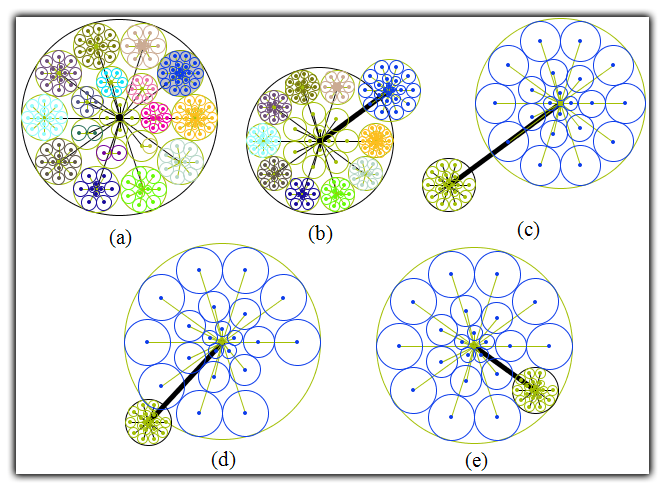

|
This image illustrates a tree visualization and interaction engine rooted in the the "RINGS" algorithm. This visualization engine was used in a web browsing interface that retrieves parts of the web's graph structure in real time, draws it as a tree, and allows a user to brows and visualize this space within a single interface. |